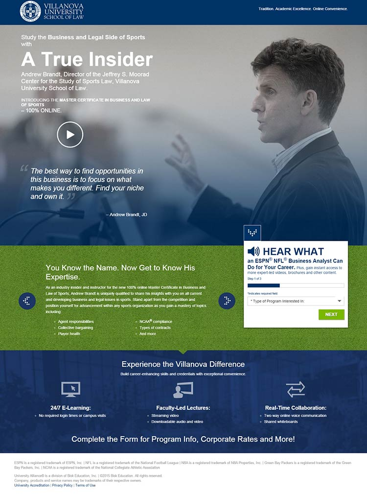

Project Type: Landing Page
My Role: Designer Developer
In July 2014 I helped create a fun, engaging experience that highlights Andrew Brandt and his accomplishments as well as his association with Villanova University’s Business of Law and Sports program.
View Live Project 